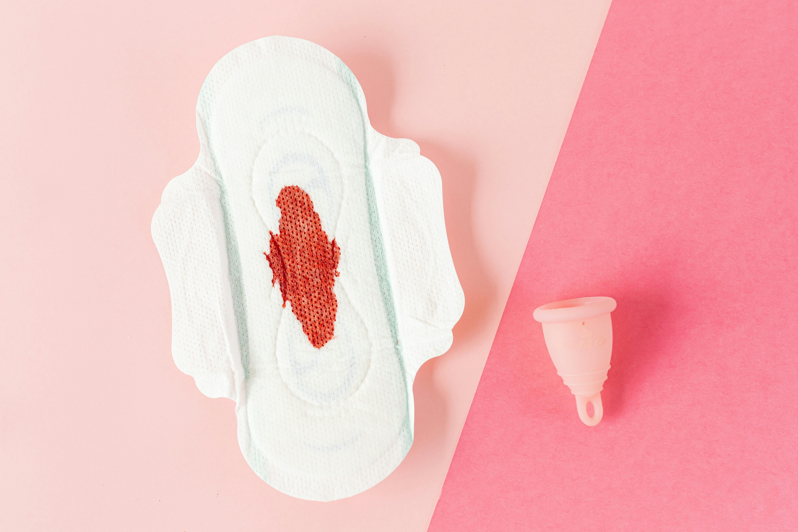
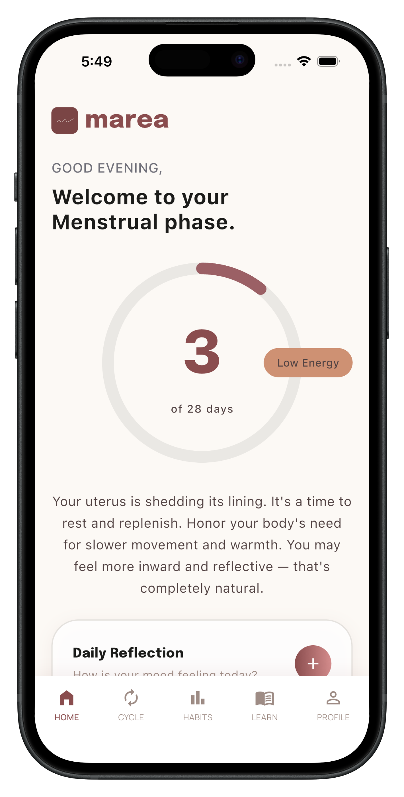
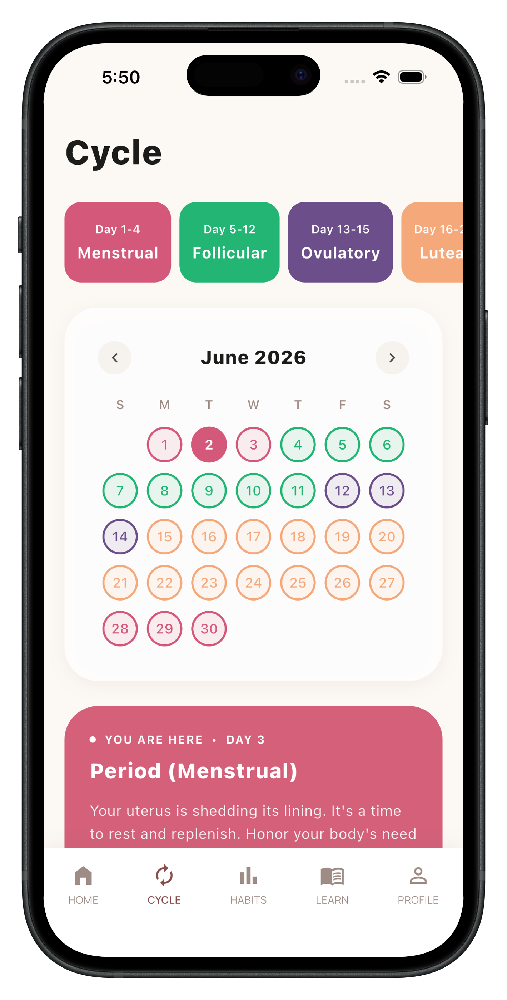
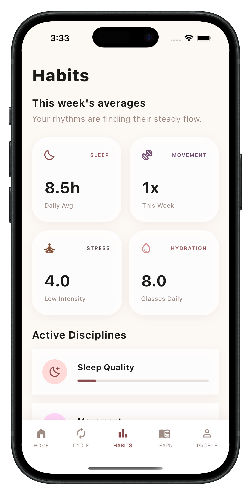
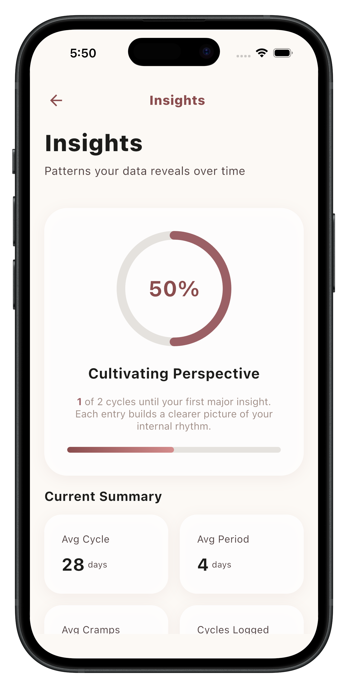
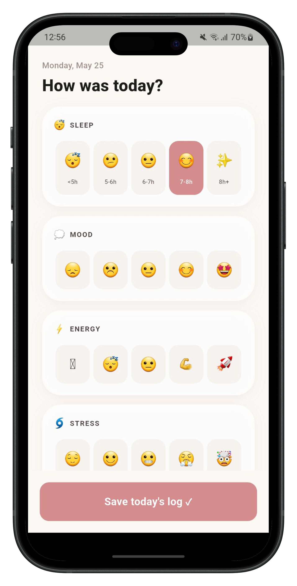

Cycle 101
What your flow colour is actually telling you
Bright red vs dark brown, it's not random. Your blood communicates something every time.
⏱ 8 min
Discover how your energy, mood, symptoms, and daily habits connect to your menstrual cycle.
Science-backed · Privacy-first · Built for India

The gap no one talks about
"Your body runs a full story every month.
Most of us were just never taught how to read it."
Office of the Registrar General of India · UNFPA India Menstrual Health Report · Meta-analysis of 41 studies (Gollenberg et al., 2010)
Everything in one place

Cycle calendar
Habit patterns
Insights
The ritual
Five simple questions about your day. Over time, the answers become the most personal health data you've ever had.
The difference
Marea connects your daily habits: sleep, stress, movement, hydration to your cycle over time. Patterns that took years to notice become visible in weeks.
Privacy
Privacy isn't a feature, it's the foundation. Marea never sees, stores, or touches your data. Everything stays on your phone.
Anonymous. No email, no name, no phone number.
Encrypted local database. Never uploaded.
Understand yourself
Science-backed. Written for real people. No jargon.

Bright red vs dark brown, it's not random. Your blood communicates something every time.
The science says something most people don't expect, and it might change your worst days.
Your period hears your stress. The biology is more direct than most people realise.
Your uterus cares about your meal schedule, irregular eating shows up in cycle data.
Questions
Get the app
Free forever. 60 seconds a day. Everything stays on your phone - no account, no cloud, no compromise.
Free · No account · No ads · Data stays on your device